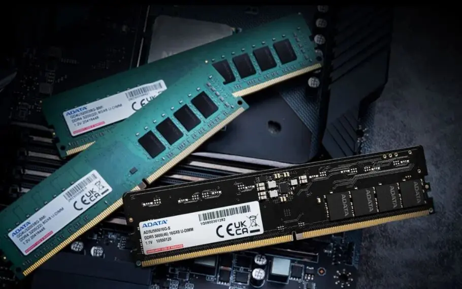

Aqui você encontra as últimas notícias do dia, cobrindo uma variedade de tópicos, desde política e economia até entretenimento e esportes. Fique atualizado com as informações mais recentes e relevantes para o seu dia a dia.
Principais Notícias
Botafogo-PB e Sousa se reencontram para definir o campeão paraibano de 2026
Transmissão
a partida tem transmissão em TV aberta nas TV’s Cabo Branco e Paraíba. A narração fica por conta de Cristiano Sacramento, os comentários de + Onde assistir:João Pedro Melo e as reportagens de Iaco Lopes e Max Oliveira. + Onde ouvir: nas ondas do rádio as emoções ficam com a CBN. A narração é de Raelson Galdino, os comentários de Apolo Ricarte e reportagens de Fabiano Sousa e Marcos Siqueira.
Crise no mercado RAM: entenda o aumento de preço nos módulos de memória

Preços dispararam nos últimos meses e tornaram o componente um dos itens mais caros para montar ou atualizar um PC, afetando especialmente os gamers; entenda o motivo.
Nos últimos meses, o mercado de memórias RAM (módulos DRAM DDR4 e DDR5) tem enfrentado uma crise que disparou os preços drasticamente. Em alguns casos, as variações de valor chegaram a atingir entre 200% e 400%, transformando o upgrade de um PC ou laptop — antes um procedimento simples e relativamente acessível — em um investimento oneroso.
Além das memórias, unidades de armazenamento, como SSDs, também registram altas significativas. Considerando o cenário atual de redirecionamento da produção para chips de inteligência artificial, cortes estratégicos na oferta de componentes e a transição global para o padrão DDR5, a tendência é que os preços levem tempo para se estabilizar. Abaixo, o TechTudo detalha os fatores por trás dessa crise e analisa se vale a pena investir agora ou aguardar a normalização do mercado.